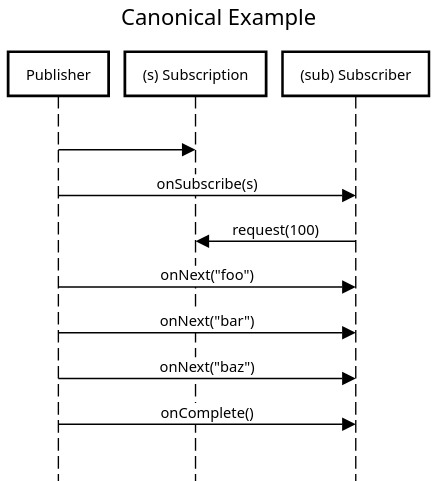
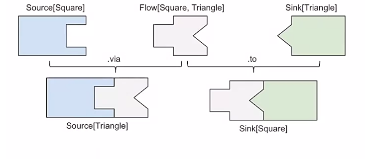

class: center, middle # Akka Streams Basics Brennan Holten @47deg / @bjholten ??? Questions any time --- ### Agenda 1. Review Futures 2. Akka Streams basics 3. Best practices, architecture, etc. --- class: center, middle # Futures --- ### Futures - Why `Futures`? 1. Everything Akka Streams returns ("materializes") will be wrapped in a `Future`. 2. Methods returning `Future` will drive your entire application --- ### What is a `Future`? - Represents a value which may or may not *currently* be available, but will either: 1. return a value at some point, or 2. return an exception if that value could not be made available ```scala def makeCoffee(): Future[Coffee] = ??? def doOrder(): Unit = { makeCoffee().onComplete { case Success(coffee) => println(s"Finished making $coffee!") case Failure(reason) => println(s"Oh no! An error: $reason!") } } ``` --- ### What is a `Future`? - Require an `ExecutionContext` responsible for executing computations - `ExecutionContext`s can run different `Executor`s (work-stealing, fixed thread-pool, cached thread-pool, etc.) - Defining a `Future` in the presence of an `ExecutionContext` will run the `Future` -- different from other systems like Cats Effect `IO`, which is more purely a _description_ of a computation. ```scala // Note: these are VERY different! val future1: Future[Int] = Future { Thread.sleep(1000); 42 } def future2: Future[Int] = Future { Thread.sleep(1000); 42 } ``` --- ### `Future` API ```scala // not real code, but similar trait Future[+A] { def onComplete(k: Try[A] => Unit): Unit // transform successful results def map[B](f: A => B): Future[B] def flatMap[B](f: A => Future[B]): Future[B] def zip[B](fb: Future[B]): Future[(A, B)] // transform failures def recover(f: Exception => A): Future[A] def recoverWith(f: Exception => Future[A]): Future[A] } ``` --- ### `Futures` in Sequence ```scala trait AccountApi { def login(credentials: String): Future[Token] def get(userToken: Token, accountId: String): Future[Account] def update(userToken: Token, accountId: String, account: Account): Future[Unit] def logout(userToken: Token): Future[Unit] } ``` ```scala val credentials: String = ??? val accountId: String = ??? val newAccount: Account = ??? val accountApi: AccountApi = ??? implicit val ec: ExecutionContext = ??? def program(): Future[Unit] = accountApi.login(credentials).flatMap { userToken => accountApi.getAccount(userToken, accountId).flatMap { account => accountApi.updateAccount(userToken, account.id, newAccount).flatMap { _ => accountApi.logout(userToken) } } } ``` --- ### `Futures` in Sequence - Because `Future` has `map` and `flatMap`, you can rewrite using `for` syntax ```scala def program(): Future[Unit] = for { userToken <- accountApi.login(credentials) account <- accountApi.getAccount(userToken, accountId) _ <- accountApi.updateAccount(userToken, account.id, newAccount) _ <- accountApi.logout(userToken) } yield () ``` --- ### Running `Future`s in Parallel ```scala trait WeatherStation { def getTemperature(city: String): Future[Double] } ``` ```scala val weatherStation: WeatherStation = ??? def chicago(): Future[Double] = weatherStation.getTemperature("chicago") def seattle(): Future[Double] = weatherStation.getTemperature("seattle") def result(): Future[(Double, Double)] = chicago() zip seattle() ``` --- class: center, middle # Future Best Practices --- ### Future Best Practices - Do not wrap purely CPU-bound operations in `Future` ```scala // Bad: def add(x: Int, y: Int) = Future { x + y } // Good: def add(x: Int, y: Int) = x + y ``` --- ### Future Best Practices - Avoid blocking -- `Future` all the way down ```scala // Bad: def fetchSomething: Future[String] = ??? // later ... val result = Await.result(fetchSomething, 3.seconds) result.toUpperCase ``` ```scala // Good: def fetchSomething: Future[String] = ??? fetchSomething.map(_.toUpperCase) ``` --- ### Future Best Practices - Use Scala's BlockContext on blocking I/O ```scala // Bad: Future { someBlockingCall() } ``` ```scala // Good: import scala.concurrent.blocking Future { blocking { someBlockingCall() } } } ``` ??? By blocking we mean: blocks the underlying thread --- ### Future Best Practices - Use a separate thread-pool for blocking I/O Calls marked `blocking` signal to the `BlockingContext`, which allows the `ExecutionContext` to decide how to schedule the operation such that non-blocking calls won't be starved of threads. ```scala import java.util.concurrent.Executors // Good private val ioThreadPool = Executors.newCachedThreadPool() // Better private val ioThreadPool = /** loaded from configuration **/ ``` --- ### Future Best Practices - Do not hardcode the thread-pool / execution context Introduces coupling between the `ExecutionContext` and your logic. ```scala // Bad: import scala.concurrent.ExecutionContext.Implicits.global def doSomething: Future[Unit] = ??? ``` ```scala // Good: def doSomething(implicit ec: ExecutionContext): Future[Unit] = ??? ``` --- class: center, middle # Akka Streams Fundamentals --- ### Stream Processing - Processing a number of elements (possibly infinite) - Pushing/pulling data through a "pipeline" - Pipeline is a chain of operations on each element - Operations are similar to Scala collections (map, flatMap, filter, etc.) --- ### Motivation for Streaming APIs - Data sources can be intermittent or unbounded - Processing data that cannot fit into memory - Easy control of processing rates, failure, etc. --- ### Back-pressure / Flow Control - _Back-pressure_ is a mechanism to control the _rate_ at which an upstream publishers is emitting data to a downstream subscriber in proportion to the subscriber's processing ability --- ### Reactive Streams - "Reactive Streams is an initiative to provide a standard for asynchronous stream processing with non-blocking back pressure." - A set of interaction rules (the Specification) - A Service Provider Interface (SPI), not an API - A technology compliance kit (TCK) Core concepts: - publisher = emits elements asynchronously - subscriber = consumes elements - processor = transforms elements - backpressure = subscriber drives flow --- ### Reactive Streams Ecosystem - Part of Java since Java 9 (java.util.concurrent.Flow) - Ported to .NET and other languages - Similar libraries Project Reactor, Vert.X, etc. --- class: center, middle  --- ### Stream Fundamentals - Akka Streams provides a _high-level API_ for stream processing - Implements the _Reactive Streams protocol_ on all of its layers - Familiar Scala collections API (map, filter, etc.) --- ### Simple Example ```scala import akka.actor._ import akka.stream.scaladsl.{Flow, Sink, Source} import scala.concurrent.Future implicit val system: ActorSystem = ActorSystem() def eventuallyResult: Future[Int] = Source(1 to 10) .map(_ * 2) .runFold(0)((acc, next) => acc + next) ``` --- ### Simple Example ```scala import akka.actor._ import akka.stream.scaladsl.{Flow, Sink, Source} import scala.concurrent.Future implicit val system: ActorSystem = ActorSystem() def eventuallyResult: Future[Int] = Source(1 to 10) .map(_ * 2) .runWith( Sink.fold(0)((acc, next) => acc + next) ) ``` --- ### Simple Example ```scala import akka.actor._ import akka.stream.scaladsl.{Flow, Sink, Source} import scala.concurrent.Future implicit val system: ActorSystem = ActorSystem() val numbers = Source(1 to 10) val double = Flow[Int].map(_ * 2) val sum = Sink.fold(0)((acc: Int, next: Int) => acc + next) def eventuallyResult: Future[Int] = numbers.via(double).runWith(sum) ``` --- ### Shapes of Processing Stages - The "steps" of a processing pipeline (the Graph) are called _stages_ - The term _operator_ is used for the fluent DSL's API, such as map, flatMap, filter, etc. Three main shapes of Akka Streams 1. Source - has exactly 1 output 2. Flow - has exactly 1 input and 1 output 3. Sink - has exactly 1 input --- ### Comparison to Reactive Streams - `Source[O, _]` is equivalent to `Publisher[O]` - `Sink[I, _]` is equivalent to `Subscriber[I]` - `Flow[I, O, _]` is equivalent to `Processor[I, O]` --- class: center, middle  --- ### Running (Materializing) a Stream - Running a stream "materializes" it to a value - This is the return value after the stream completes - The `Materializer` looks at the Graph description and executes it (using Actors) ```scala def eventuallyResult: Future[Int] = Source(1 to 10) .map(_ * 2) .runFold(0)((acc, next) => acc + next) ``` In this example, the _materialized value_ is the `Future[Int]` returned after summing all the numbers together. ```scala val sum: Sink[Int, Future[Int]] = Sink.fold(0)((acc: Int, next: Int) => acc + next) ``` --- ### Materializing Different Values - Each stage in your Graph can materialize a value, as seen in the type signature ```scala Source[+Out, +Mat] Flow[-In, +Out, +Mat] Sink[-In, +Mat] ``` - How do you choose which materialized value to keep in your Graph? ```scala import akka.actor._ import akka.stream.scaladsl.{Flow, Keep, Sink, Source} import scala.concurrent.Future implicit val system: ActorSystem = ActorSystem() val numbers = Source(1 to 10) val double = Flow[Int].map(_ * 2) val sum = Sink.fold(0)((acc: Int, next: Int) => acc + next) def eventuallyResult: Future[Int] = numbers.via(double).toMat(sum)(Keep.right).run() ``` --- ### Operator Fusion - The `Materializer` will _fuse_ operators together when it builds the Graph - E.g. successive calls to `.map` will be combined and processed by a single Actor internally - To introduce parallelism, use `.async` operator to create an "async boundary", or `*Async` versions of operators --- ### Backpressure - Demo --- class: center, middle # Integration --- ### Integrating with Actors - example --- ### Integrating with External Services - example --- ### Fault Tolerance and Error Handling - example --- ### Testing Akka Streams - example --- class: center, middle # Patterns and Best Practices --- ### Structuring your application - Akka Streams can be thought of as a DSL for creating `Future`s - Hide effects behind `Future`s or `Actor`s - `Future` becomes your fundamental effect type --- class: center, middle # Stream Graphs --- ### Graph DSL - Example --- ### Open and Closed Graph Shapes - example --- ### Graph Materialized Values - example --- ### Bidirectional Flows - example --- ### Cycles - example --- ### Dynamic Stream Handling - example --- ### Substreams - example --- ### Custom Graph Shapes - example --- ### Custom Operators and Custom Graph Stages - example class: center, middle # Thanks! Code and slides at `bholten/mdoc-presentations` on GitHub ## Questions?